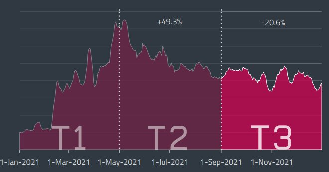
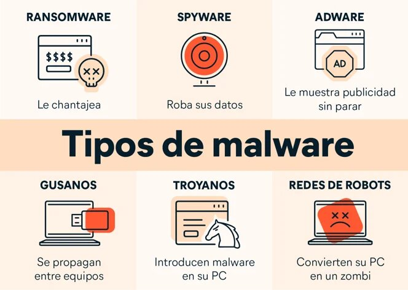

Si bien 2020 fue el año de los ataques a la cadena de suministro (y también el comienzo de la crisis mundial por la COVID-19), el 2021 estuvo definido por vulnerabilidades sorprendentemente graves.
El año comenzó con fuerza, cuando los servidores de Microsoft Exchange de todo el mundo se vieron atacados por al menos diez grupos APT. ProxyLogon, la cadena de vulnerabilidades que dio lugar a estos ataques terminó siendo el segundo vector de ataque externo más frecuente en 2021 según la telemetría de ESET, justo después de los ataques que buscan descifrar contraseñas. Como leerá en el informe de amenazas correspondiente al tercer cuatrimestre de 2021 (ESET T3 2021), los servidores de Microsoft Exchange terminaron bajo asedio nuevamente en agosto de 2021, con el “hermano menor” de ProxyLogon, llamado ProxyShell, que fue explotado en todo el mundo por varios grupos de amenazas.

Cuando apareció una falla crítica en la popular utilidad Log4j a mediados de diciembre, los equipos de TI de todas partes se apresuraron para localizar en sus sistemas la falla y corregirla. Esta vulnerabilidad, que obtuvo un puntaje de 10 en la escala CVSS, puso a innumerables servidores en riesgo de un posible control total, por lo que no sorprendió que los ciberdelincuentes comenzaran a explotarla instantáneamente. A pesar de que la explotación de la vulnerabilidad comenzó durante las últimas tres semanas del año, los ataques de Log4j se convirtieron rápidamente en el quinto vector de intrusión externa más común en nuestras estadísticas de 2021, lo que refleja cuán rápido los actores de amenazas se están aprovechando de las vulnerabilidades críticas emergentes.

El ransomware, que fue descrito en el reporte del último trimestre de 2020 como “más agresivo que nunca”, superó las peores expectativas en 2021, con ataques dirigidos a infraestructuras críticas, demandas por el pago de los rescates por sumas escandalosas y transacciones en bitcoins vinculadas a posibles pagos de ransomware durante la primera mitad de 2021 por una cifra que superó los 5.000 millones de USD.
Y para agregar otro máximo histórico: cuando la cotización del bitcoin alcanzó su punto más alto hasta ahora en noviembre de 2021, los expertos de ESET observaron una afluencia de amenazas dirigidas a criptomonedas, impulsadas aún más por la reciente popularidad de los NFT (tokens no fungibles).
En el mundo de los dispositivos móviles, notamos un aumento alarmante en las detecciones de malware bancario para Android, que aumentaron un 428 % en 2021 en comparación con 2020, alcanzando los niveles de detección de adware, una molestia común en la plataforma. No hace falta decir que es imposible comparar el potencial de daño de estas dos amenazas, y solo podemos esperar que, en el caso del malware bancario, la tendencia a la baja que observamos durante el último cuatrimestre de 2021 se extienda a 2022.
Las detecciones de amenazas a través del correo electrónico, la puerta a una miríada de otros ataques, alcanzaron cifras anuales de más del doble. Esta tendencia se explica principalmente por un importante aumento en los correos electrónicos de phishing, que incluso compensaron la rápida disminución en las detecciones de macros maliciosas para archivos adjuntos de correo electrónico correspondientes a Emotet. De hecho, Emotet, que estuvo inactivo durante la mayor parte del año, resurgió en el último cuatrimestre de 2021, con sus operadores tratando de reconstruir su infraestructura con el apoyo de Trickbot. En 2022, los analistas de malware de ESET esperan que la red de bots se expanda rápidamente, empujando al malware nuevamente a los primeros lugares, un proceso que estaremos monitoreando de cerca.
Los últimos meses de 2021 también estuvieron plagados de hallazgos producto de las investigaciones. Por ejemplo, el descubrimiento por parte del equipo de ESET Research de FontOnLake, una nueva familia de malware dirigida a Linux; un bootkit UEFI previamente no documentado llamado ESPecter; FamousSparrow, un grupo de ciberespionaje que apunta al sector hotelero, gobiernos y empresas privadas de todo el mundo; y muchos otros. El tercer cuatrimestre también vio a nuestros investigadores publicar un análisis completo de los 17 frameworks maliciosos que se sabe fueron utilizados para atacar redes aisladas, y concluyeron su extensa serie sobre troyanos bancarios de América Latina.
El informe de amenazas de ESET para el tercer cuatrimestre de 2021 también incluye información inédita sobre las operaciones de grupos de APT. Esta vez, los investigadores ofrecen actualizaciones sobre la actividad del grupo de ciberespionaje OilRig; la información más reciente sobre la explotación activa de ProxyShell; y nuevas campañas de spearphishing del infame grupo de ciberespionaje The Dukes.
Y, como siempre, los investigadores de ESET aprovecharon múltiples oportunidades para compartir su experiencia en varias conferencias virtuales durante este período, diciendo presente en Virus Bulletin 2021, CyberWarCon 2021, SecTor 2021, AVAR 2021 Virtual y otros. Para los próximos meses, nos complace invitarlo a la charla de ESET en SeQCure en abril de 2022 y a la Conferencia RSA en junio de 2022, donde presentaremos el reciente descubrimiento de ESPecter.
Fuentes.
https://www.edapp.com/blog/es/12-cursos-gratuitos-de-ciberseguridad/
https://www.udemy.com/es/topic/web-security/
https://edu.gcfglobal.org/es/seguridad-en-internet/